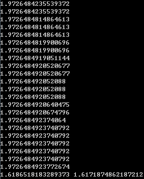

猜涨跌屡猜屡错，气死我了。原因其实还是因为缺少历史赔率数据，只根据价格来判断，虽然能够有85%的概率猜对，但是通常形势明朗时赔率很低。现在开始我把每天的赔率数据都记录下来，等数据足够多了再试试。目前我有个想法，能不能通过遗传算法，进化出一个机器人，能够自动炒股或者炒外汇，因为价格数据是可以获取的。
过去我用Java实现过遗传算法，用了400多行，而现在用Python实现，只需要90行，哎，差距真的好大。遗传算法的原理可以参考《遗传算法——理论、应用与软件实现》一书，讲的挺清楚的。对于每一个基因Gen，都有交配(mute)和变异(mutate)操作。mute操作需要两个长度相等的基因，然后随机选择一个交叉点，相互交叉形成两条新的基因。比如两条基因分别是A=00101110和B=10101100，交叉位置是3，那么则把A的前3位和B的后5位组成一个新的基因C=00101100，把B的前3位和A的后5位组成一个新的基因D=10101110。mutate操作则是对于某个基因，随机选择一个点位，然后取反。比如基因G=00101110，变异点位是5，则变成G'=00100110。
所以基因封装类Gen的代码就很清楚了：
import random
class Gen:
#构造，length是基因长度
def __init__(self,length,bins=None):
if not isinstance(length,int) or length<=0:
raise TypeError('<length> should be a positive integer')
self.__len=length
if bins:
if not isinstance(bins,list) or len(bins)!=length:
raise TypeError('<bins> should be a %d-length list' % length)
for b in bins:
if b not in [0,1]:
raise ValueError('elements in <bins> should be 0 or 1')
self.__bins=bins
else:
self.__bins=[0 if random.random()<0.5 else 1 for i in range(length)]
#与另一条基因交配，产生两条新的基因
def mate(self,gen):
if not isinstance(gen,Gen):
raise TypeError('<gen> should be an instance of Gen')
if gen.__len!=self.__len:
raise ValueError('<gen> has a different length')
pos=random.randint(1,self.__len-1)
bins_1=self.__bins[:pos]+gen.__bins[pos:]
bins_2=gen.__bins[:pos]+self.__bins[pos:]
return Gen(self.__len,bins_1),Gen(self.__len,bins_2)
#变异，产生一条新的基因
def mutate(self):
pos=random.randint(0,self.__len-1)
bins=self.__bins.copy()
bins[pos]=1-bins[pos]
return Gen(self.__len,bins)
#返回二进制编码，是一个一维数组，每一个元素是0或1
def bins(self):
return self.__bins
#把二进制编码中[start,end]的一段二进制映射到[x_min,x_max]上
def decode(self,x_min,x_max,start=0,end=None):
if not isinstance(x_min,(int,float)):
raise TypeError('<x_min> should be a number')
if not isinstance(x_max,(int,float)):
raise TypeError('<x_max> should be a number')
if not isinstance(start,int) or start<0 or start>=self.__len:
raise TypeError('<start> should be an integer between [0,%d)' % self.__len)
if end==None:
end=self.__len-1
if not isinstance(end,int) or end<start or end>=self.__len:
raise TypeError('<end> should be an integer between [%d,%d)' % (start,self.__len))
val=sum((self.__bins[start+i]<<i for i in range(end-start+1)))
val_max=(1<<(end-start+1))-1
return (x_max-x_min)*val/val_max+x_min
def __str__(self):
return ''.join([str(b) for b in self.__bins])
现在可以写一个测试用例来测试class Gen：
g1,g2=Gen(10),Gen(10)
print('g1='+str(g1))
print('g2='+str(g2))
g3,g4=g1.mate(g2)
print('g3='+str(g3))
print('g4='+str(g4))
g5=g4.mutate()
print('g5='+str(g5))
print(g5.decode(0,100))
print(g5.decode(10,50,1,4))
可以看到输出结果为：

比较g1,g2和g3,g4，可以得知交叉位置为6。比较g4和g5，得知变异位置为6（好巧）。那么最后两个decode()操作是怎么回事呢？g5的编码是0101001010，由于是低位在前，所以其相当于二进制0101001010b，也就是330。而10位二进制最大表达0x3ff，也就是1023。所以对于映射到[0,100]的值就是330/1023*(100-0)+0=32.25806451612903。而第二个decode()则更加复杂一些，decode(10,50,1,4)意思是只看第1位到4位，映射到[10,50]。第1到4位为1010，也就是二进制的0101b，也就是5。四位二进制最大表达0xf，也就是15，所以最终的值是5/15*(50-10)+10=23.333333333。
有了Gen以后去，就是GA算法本身了。GA算法有很多变种，最标准的在《遗传算法——理论、应用与软件实现》一书中有所论述，即根据适应度来计算交配概率。不过我为了避免适应度->交配概率转换规则的不同带来的影响，我自己发明了一种变种如下：
设定种群大小为S，交配概率为p1，变异概率为p2；
每次迭代，执行如下操作：
进行floor(S*p1/2)次杂交操作，每次操作步骤如下：
随机从[0,S-1]中选取两个整数i,j；
使第i条基因和第j条基因交配，产生两条新的基因，加入种群；
对原本就存在的S条基因，依次执行：
产生随机数a，如果a<p2，则使该基因变异，产生新的基因，加入种群；
对所有的基因（理论个数为S(1+p1+p2)）计算适应度；
只保留适应度在前S个的基因；
其实这种方式很简单，就是每一代杀死最差的一小撮。由于只关注适应度的大小，而不关注具体的值，所以不需要担心适应度的尺度变换不当而带来的影响，较少了调参的因素。代码如下：
import random
class GA:
#构造，gen_len为基因长度，size为种群大小，fit_func为适应度函数（接受一个Gen对象），mate_p和mutate_p分别是交配概率和变异概率
def __init__(self,gen_len,size,fit_func,mate_p=0.1,mutate_p=0.1):
if not isinstance(gen_len,int) or gen_len<=0:
raise TypeError('<gen_len> should be a positive integer')
if not isinstance(size,int) or size<=0:
raise TypeError('<size> should be a positive integer')
if not hasattr(fit_func,'__call__'):
raise TypeError('<fit_func> should be a function')
if not isinstance(mate_p,float) or mate_p<0 or mate_p>1:
raise TypeError('<mate_p> should be a float in [0,1]')
if not isinstance(mutate_p,float) or mutate_p<0 or mutate_p>1:
raise TypeError('<mutate_p> should be a float in [0,1]')
self.__gen_len=gen_len
self.__size=size
self.__fit_func=fit_func
self.__mate_p=mate_p
self.__mutate_p=mutate_p
self.__gens=[Gen(gen_len) for i in range(size)]
self.__best=None
#产生新的一代
def generate(self):
for i in range(int(self.__size*self.__mate_p/2)):
g1,g2=[self.__gens[random.randint(0,self.__size-1)] for i in range(2)]
g3,g4=g1.mate(g2)
self.__gens.append(g3)
self.__gens.append(g4)
for i in range(self.__size):
if random.random()<self.__mutate_p:
self.__gens.append(self.__gens[i].mutate())
gen_fits=[(g,self.__fit_func(g)) for g in self.__gens]
gen_fits.sort(key=lambda entry:entry[1],reverse=True)
self.__best=gen_fits[0]
self.__gens=[gt[0] for gt in gen_fits[:self.__size]]
#获取当前最优解(基因,适应度)
def best(self):
return self.__best
编写测试用例如下：
import math
def fitness(gen):
x=gen.decode(0,3,0,49)
y=gen.decode(0,3,50,99)
l=math.sqrt(x*x+y*y)
return x*y*math.sin(l)
ga=GA(100,50,fitness,0.2,0.3)
for i in range(100):
ga.generate()
g,f=ga.best()
print(f)
x=g.decode(0,3,0,49)
y=g.decode(0,3,50,99)
print(x,y)
这个用例其实是用遗传算法计算f(x,y)=x*y*sin(sqrt(x*x+y*y)),其中x,y in [0,3]这个函数的最大值。每一代输出当代最大值，最后输出最优的x和y。结果如下：

可以看到结果不错~点击下载完整的GA.py~
文章本来写到这里就结束了。昨天使用遗传算法进化四层感知机，速度太慢了。虽然预测准确率在缓慢爬升，但是太慢了！Python版本的代码验证了可行性，但是需要做更加深入的实验，必须得用C/C++来实现。所以我今天又花了一个晚上实现了C++版本的遗传算法。逻辑与Python版本一模一样的，所以就不解释了，直接贴代码。
GA.h
#ifndef GA_H
#define GA_H
#include <stdint.h>
class Gen
{
public:
Gen(uint32_t len,bool random=true);
~Gen();
Gen** mate(Gen* g);
Gen* mutate();
double decode(uint32_t start,uint32_t end,double min,double max) const;
private:
uint32_t len;
uint8_t* bits;
Gen* childs[2];
};
class GA
{
public:
GA(uint32_t len,uint32_t size,double (*fit_func)(const Gen*),double mate_p,double mutate_p);
~GA();
void generate();
double best_fitness();
const Gen* best_gen();
public:
struct Gen_F
{
Gen* gen;
double fitness;
};
private:
uint32_t len;
uint32_t size;
double (*fit_func)(const Gen*);
double mate_p;
double mutate_p;
Gen_F** gen_fs;
uint32_t gen_fs_len;
uint32_t best;
};
#endif
GA.cpp
#include "GA.h"
#include <stdlib.h>
#include <string.h>
#include <assert.h>
#include <algorithm>
Gen::Gen(uint32_t len,bool random)
{
assert(len>0);
this->len=len;
this->bits=new uint8_t[len];
if(random)
for(uint32_t i=0;i<len;i++)
this->bits[i]=rand()%2;
}
Gen::~Gen()
{
delete[] this->bits;
}
Gen** Gen::mate(Gen* g)
{
assert(this->len==g->len);
Gen* gen_1=new Gen(this->len,false);
Gen* gen_2=new Gen(this->len,false);
uint32_t hcnt=rand()%(this->len-1)+1;
uint32_t tcnt=this->len-hcnt;
memcpy(gen_1->bits,this->bits,hcnt);
memcpy(gen_1->bits+hcnt,g->bits+hcnt,tcnt);
memcpy(gen_2->bits,g->bits,hcnt);
memcpy(gen_2->bits+hcnt,this->bits+hcnt,tcnt);
this->childs[0]=gen_1;
this->childs[1]=gen_2;
return this->childs;
}
Gen* Gen::mutate()
{
Gen* gen=new Gen(this->len,false);
memcpy(gen->bits,this->bits,this->len);
uint32_t pos=rand()%this->len;
gen->bits[pos]=1-gen->bits[pos];
return gen;
}
double Gen::decode(uint32_t start,uint32_t end,double min,double max) const
{
assert(start<=end&&end<this->len);
double percent=0,calibration=1;
for(uint32_t i=start;i<=end;i++)
{
percent/=2;
if(this->bits[i]==1)
percent+=0.5;
calibration/=2;
}
percent/=1-calibration;
return (max-min)*percent+min;
}
GA::GA(uint32_t len,uint32_t size,double (*fit_func)(const Gen*),double mate_p,double mutate_p)
{
assert(len>0&&size>0&&fit_func!=0&&0<mate_p&&mate_p<1&&0<mutate_p&&mutate_p<1);
this->len=len;
this->size=size;
this->fit_func=fit_func;
this->mate_p=mate_p;
this->mutate_p=mutate_p;
this->gen_fs_len=(int)(size*(1+mate_p+mutate_p));
this->gen_fs=new struct Gen_F*[this->gen_fs_len];
for(uint32_t i=0;i<this->gen_fs_len;i++)
this->gen_fs[i]=new struct Gen_F;
for(uint32_t i=0;i<size;i++)
this->gen_fs[i]->gen=new Gen(len);
this->best=size;
}
GA::~GA()
{
for(uint32_t i=0;i<this->size;i++)
delete this->gen_fs[i]->gen;
for(uint32_t i=0;i<this->gen_fs_len;i++)
delete this->gen_fs[i];
delete[] this->gen_fs;
}
static bool __GA_comparator(const struct GA::Gen_F* gen_f_1,const struct GA::Gen_F* gen_f_2)
{
return gen_f_1->fitness>gen_f_2->fitness;
}
void GA::generate()
{
uint32_t count=this->size;
for(uint32_t i=(uint32_t)(this->size*this->mate_p/2);i>0;i--)
{
Gen* gen_1=this->gen_fs[rand()%this->size]->gen;
Gen* gen_2=this->gen_fs[rand()%this->size]->gen;
Gen** childs=gen_1->mate(gen_2);
this->gen_fs[count++]->gen=childs[0];
this->gen_fs[count++]->gen=childs[1];
}
for(uint32_t i=(uint32_t)(this->size*this->mutate_p);i>0;i--)
{
Gen* gen=this->gen_fs[rand()%this->size]->gen;
this->gen_fs[count++]->gen=gen->mutate();
}
for(uint32_t i=0;i<count;i++)
{
Gen_F* gen_f=this->gen_fs[i];
gen_f->fitness=fit_func(gen_f->gen);
}
std::sort(gen_fs,gen_fs+count,__GA_comparator);
for(int i=this->size;i<count;i++)
delete this->gen_fs[i]->gen;
this->best=0;
}
double GA::best_fitness()
{
assert(this->best<this->size);
return this->gen_fs[this->best]->fitness;
}
const Gen* GA::best_gen()
{
assert(this->best<this->size);
return this->gen_fs[this->best]->gen;
}
测试用例也是和Python版本的一样的逻辑：
#include <stdio.h>
#include "GA.h"
#include <time.h>
#include <stdlib.h>
#include <math.h>
double fitness(const Gen* g)
{
double x=g->decode(0,49,0,3);
double y=g->decode(50,99,0,3);
double l=sqrt(x*x+y*y);
return x*y*sin(l);
}
int main()
{
srand(time(0));
GA ga(100,50,fitness,0.2,0.3);
for(int i=0;i<100;i++)
{
ga.generate();
printf("%lf\n",ga.best_fitness());
}
const Gen* g=ga.best_gen();
double x=g->decode(0,49,0,3);
double y=g->decode(50,99,0,3);
printf("%lf\t%lf\n",x,y);
return 0;
}
然后我做了一个性能对比，把迭代次数改为1000之后，Python版本用了2.363秒，而C++版本用了0.175秒，相差13.5倍～